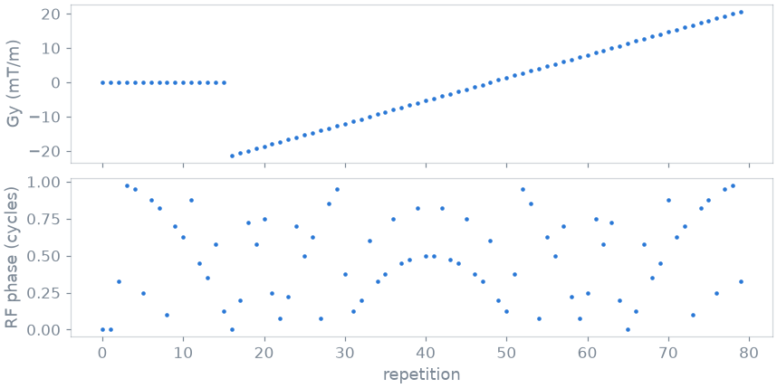

Note
Go to the end to download the full example code.
3. Scanner representation#
A Pulseq file lists every block of a scan. The scanner plays it as an execution stream of segment instances: each virtual segment, an ordered list of base blocks, is prepared once and played many times with new amplitudes and phases. This lesson converts the design of the previous lessons into that representation, reads what it was reduced to, and walks the stream as the scanner’s playout does. The model is described in Scanner representation (PulSeg).
Learning objectives
Convert a sequence file into its IR cache with
convert().Read the repetition, the virtual segments and the readouts of a design from
summary().Walk the execution stream with
play(), and tell what a segment instance changes from what its virtual segment fixes.Change where segment boundaries fall with
Grouping.
The next lesson reconstructs the raw data a scan of this cache returns.
Conversion#
The design is pypulseqpp’s 2D gradient echo at a 64 by 64 matrix, written to
a file. convert() reads it under the scanner limits and
writes the IR cache beside it, and summary() reports
what the conversion reduced it to.
import tempfile
from pathlib import Path
import numpy as np
import pypulseqpp as pp
from pypulseqpp.sequences.sequence.gre2D_sequence import gre2d
from pulserver import ir
system = pp.Opts(max_grad=40, grad_unit="mT/m", max_slew=150, slew_unit="T/m/s")
path = Path(tempfile.mkdtemp()) / "gre2d.seq"
seq = gre2d(system, n_x=64, n_y=64)
seq.write(path)
print(ir.convert(path, system).name)
report = ir.summary(path, system, cache_ext=".pseg")
gre2d.pseg
The repetition is the period pypulseqpp’s Sequence.repetition finds: one
phase-encoding line, played once per line and once per dummy scan. The
conversion cuts it into virtual segments at block boundaries where the
gradients rest. A pure delay is a virtual segment of its own, played with
each instance’s duration.
repetition = report["subsequences"][0]
print(f"{seq.num_blocks} blocks in the file")
print(
f"repetition: {repetition['tr_size']} blocks, "
f"TR {repetition['tr_duration_us'] / 1e3:.1f} ms, "
f"played {repetition['num_trs']} times"
)
for index, segment in enumerate(report["segments"]):
first = segment["start_block"] + 1
last = segment["start_block"] + segment["num_blocks"]
kind = "pure delay" if segment["pure_delay"] else "events"
print(f"virtual segment {index}: blocks {first}-{last} of the repetition, {kind}")
print(f"{report['total_readouts']} readouts")
480 blocks in the file
repetition: 6 blocks, TR 250.0 ms, played 80 times
virtual segment 0: blocks 1-5 of the repetition, events
virtual segment 1: blocks 6-6 of the repetition, pure delay
64 readouts
The execution stream#
play() loads the cache with the C library a scanner
links and walks the execution stream with its cursor, one entry per played
block. Each segment instance plays the blocks of its virtual segment, so the
stream is read instance by instance by stepping over that many blocks.
played = ir.play(path)
instances = []
block = 0
while block < len(played["segment"]):
instances.append(int(played["segment"][block]))
block += report["segments"][instances[-1]]["num_blocks"]
print(f"{block} blocks played as {len(instances)} segment instances")
print("virtual segments of the first instances:", instances[:6])
480 blocks played as 160 segment instances
virtual segments of the first instances: [0, 1, 0, 1, 0, 1]
Every instance of the first virtual segment plays the same base blocks. What changes from one to the next is held by the instance: here the amplitude of the phase-encoding gradient and the RF phase offset that spoiling steps.

The first repetitions are the dummy scans, played without phase encoding; the lines follow. The RF phase offset steps by an increment that grows by 117° from one repetition to the next, the schedule of RF spoiling. Both are parameters of segment instances: the virtual segment, and the waveforms the scanner prepares for it, are the same in every repetition.
Grouping#
Where boundaries may fall depends on the interpreter: one that inserts
switching time at every segment boundary needs as few segments as possible.
Grouping states the rule. Without splitting off the
delay at the edge of a segment, the repetition is one virtual segment.
ir.convert(path, system, grouping=ir.Grouping(split_edge_delays=False))
merged = ir.summary(path, system, cache_ext=".pseg")
print(
f"virtual segments: {report['num_segments']} by default, {merged['num_segments']} merged"
)
virtual segments: 2 by default, 1 merged
Total running time of the script: (0 minutes 0.143 seconds)